Реферат и презентация по дисциплината „Компютърна периферия“
| Изготвили: | Алекс Огнянов Йордан Начев Магдалена Джисова | фак. № 121224052 фак. № 121224053 фак. № 121224210 | група 43 група 43 група 40 |
| Стандарт | Ключово нововъведение | Макс. |
|---|---|---|
| ATA-1 | PIO 0–2, DMA | 8,3 MB/s |
| ATA-2 | PIO 3–4, LBA (EIDE) | 16,6 MB/s |
| ATA-3 | S.M.A.R.T., сигурност | 16,6 MB/s |
| ATA/ATAPI-4 | Ultra DMA/33, ATAPI | 33 MB/s |
| ATA/ATAPI-5 | UDMA/66, 80-жилен кабел | 66 MB/s |
| ATA/ATAPI-6 | UDMA/100, 48-bit LBA | 100 MB/s |
| ATA/ATAPI-7 | UDMA/133, включва SATA 1.0 | 133 MB/s |
| ATA8-ACS | само команден набор | — |
| Параметър | Gen1 | Gen2 |
|---|---|---|
| Линейна скорост | 1,5 Gbit/s | 3,0 Gbit/s |
| UI | 666,7 ps | 333,3 ps |
| Полезна скорост | 150 MB/s | 300 MB/s |
| Кабел | същият 7-пинов | |
| Съвместимост | автоматично договаряне на скорост | |
Функциите NCQ, PM, hot-plug са по избор – наличието им се проверява чрез IDENTIFY DEVICE.
| Ревизия | Година | Основни нововъведения |
|---|---|---|
| 3.0 | 2009 | 6 Gbit/s → 600 MB/s; изохронно NCQ стрийминг, NCQ управление; по-добро управление на енергията |
| 3.1 | 2011 | mSATA; Queued TRIM (опашков TRIM); USM (Universal Storage Module); Zero-Power ODD; Hardware Control Features |
| 3.2 | 2013 | SATA Express (PCIe); M.2; µSSD (BGA); DevSleep; SSHD (хибридни дискове); Transitional Energy Reporting |
| 3.3 | 2016 | Поддръжка на SMR (Shingled Magnetic Recording); PWDIS (Power Disable, пин P3); Rebuild Assist |
| 3.4 | 2018 | Durable/Ordered Write Notification; мониторинг на температурата без прекъсване на работата |
| 3.5 | 2020 | Device Transmit Emphasis; Defined Ordered NCQ Commands; Command Duration Limits |
| Характеристика | PATA (ATA/ATAPI-7) | SATA (3.x) |
|---|---|---|
| Предаване | паралелно, 16 бита, едностранни сигнали | серийно, диференциални двойки (LVDS) |
| Макс. скорост | 133 MB/s (споделена) | 600 MB/s (на порт) |
| Топология | шина, 2 устройства (master/slave) | точка-точка, 1 устройство на порт |
| Кабел | 40 пина, 40/80 жила, ≤ 46 cm | 7 пина, ≤ 1 m (eSATA ≤ 2 m) |
| Захранване | 4-пинов Molex (5 V, 12 V) | 15-пинов (3,3 V, 5 V, 12 V) |
| Сигнални нива | 5 V TTL (3,3 V допустими) | ≈ 0,4 – 0,6 V диференциално |
| Hot-plug | не | да |
| Опашка от команди | TCQ (рядко поддържано) | NCQ, 32 команди |
| Конфигурация | джъмпери (master/slave/cable select) | не е нужна |
Приложен (команден) – ATA команди, протоколи PIO, DMA, FPDMA (NCQ)
Транспортен – изгражда и разбира FIS (Frame Information Structure); управлява shadow регистри
Канален – framing (SOF/EOF), CRC-32, scrambling, 8b/10b, примитиви, flow control
Физически – сериализация, LVDS приемо-предавател, OOB, синхронизация и договаряне на скорост, възстановяване на такта
Покой 0,25 V; сигнал ±0,1 V на проводник. Импулсно смущение от ±0,3 V попада в кабела при третия и четвъртия бит.
| Бит | Шум | V+ | V− | V+ − V− | Диф. | Еднопров. |
|---|---|---|---|---|---|---|
| 1 | 0 | 0,35 | 0,15 | +0,20 | 1 ✔ | 1 ✔ |
| 0 | 0 | 0,15 | 0,35 | −0,20 | 0 ✔ | 0 ✔ |
| 0 | +0,30 | 0,45 | 0,65 | −0,20 | 0 ✔ | 1 ✘ |
| 1 | −0,30 | 0,05 | −0,15 | +0,20 | 1 ✔ | 0 ✘ |
| 1 | 0 | 0,35 | 0,15 | +0,20 | 1 ✔ | 1 ✔ |
Всички напрежения са във V. „Еднопров.“ – приемник, който сравнява само V+ с праг 0,25 V спрямо маса (както при паралелния ATA).
Правило 2 важи за 18 от 32-те стойности на 5b/6b и за 4 от 8-те на 3b/4b. Останалите (вкл. изключенията D7, D24, Dx.3, Dx.7) се вземат от таблицата, за да няма повече от 5 еднакви бита подред.
Пример: низът „SATA“ (начално RD−)
| Знак | Байт | Символ | RD | abcdei | fghj | RD след |
|---|---|---|---|---|---|---|
| S | 53h | D19.2 | − | 110010 | 0101 | − |
| A | 41h | D1.2 | − | 011101 | 0101 | + |
| T | 54h | D20.2 | + | 001011 | 0101 | + |
| A | 41h | D1.2 | + | 100010 | 0101 | − |
Оранжево – добавен бит по правило 2. K28.5 = 001111 1010 / 110000 0101 съдържа comma за подравняване.
| Примитив | Предназначение |
|---|---|
| ALIGN | подравняване, компенсация на тактовете; ≥ 2 на всеки 256 dword |
| SYNC | покой (idle) на канала |
| X_RDY / R_RDY | „имам рамка за предаване“ / „готов съм да приема“ |
| SOF / EOF | начало / край на рамка |
| R_IP | приемането е в ход |
| HOLD / HOLDA | временно спиране / потвърждение (flow control) |
| WTRM | предавателят чака резултат от приемника |
| R_OK / R_ERR | рамката е приета успешно / с грешка (CRC) |
| CONT | „повтаря се предишният примитив“ – намалява EMI |
| PMREQ_P / PMREQ_S, PMACK, PMNAK | заявка за Partial / Slumber и отговор |
| DMAT | прекратяване на DMA трансфер |
OOB (Out-Of-Band) сигналите се разпознават по продължителността на паузите между пакети (bursts) от сигнал. Burst ≈ 106,7 ns (160 Gen1 UI); всеки OOB сигнал се състои от 6 burst-а.
Burst-овете се състоят от ALIGN примитиви (или еквивалентен сигнал) на Gen1 скорост; паузите са състояние „electrical idle“. Приемникът използва прозорци на допуск за паузите.
PxSSTS.DET = 3, SPD = договорената скоростScrambling
Spread-Spectrum Clocking (SSC)
Повтарящите се примитиви могат да се кодират с CONT.
| Код | FIS | Посока | Предназначение |
|---|---|---|---|
| 27h | Register – Host to Device | H → D | изпраща команда или управление (20 байта) |
| 34h | Register – Device to Host | D → H | статус и грешка след команда (20 байта) |
| 39h | DMA Activate | D → H | „готов съм да приема данни“ при DMA запис |
| 41h | DMA Setup | H ↔ D | подготовка на First-party DMA (NCQ): таг, буфер, отместване |
| 46h | Data | H ↔ D | полезни данни, до 8192 байта |
| 58h | BIST Activate | H ↔ D | вграден самотест, loopback режими |
| 5Fh | PIO Setup | D → H | параметри на PIO трансфер (брой байтове, статус) |
| A1h | Set Device Bits | D → H | обновява статус и SActive – завършване на NCQ команди |
| Код | Команда | Протокол | Описание |
|---|---|---|---|
| ECh | IDENTIFY DEVICE | PIO In | 512 байта информация: модел, сериен №, капацитет, поддържани функции |
| 25h | READ DMA EXT | DMA | четене на сектори с 48-битов LBA |
| 35h | WRITE DMA EXT | DMA | запис на сектори с 48-битов LBA |
| 60h | READ FPDMA QUEUED | NCQ | опашково четене (First-party DMA) |
| 61h | WRITE FPDMA QUEUED | NCQ | опашков запис |
| EAh | FLUSH CACHE EXT | Non-data | записва кеша на устройството върху носителя |
| 06h | DATA SET MANAGEMENT | DMA | TRIM – обявява блокове като неизползвани |
| B0h | SMART | различни | четене на атрибути, самотестове, логове |
| EFh | SET FEATURES | Non-data | включване на кеш, режим на трансфер, APM, DIPM… |
| F4h | SECURITY ERASE UNIT | PIO Out | сигурно изтриване на целия диск |
| E0h | STANDBY IMMEDIATE | Non-data | спиране на шпиндела / режим на готовност |
| A0h | PACKET | ATAPI | SCSI команди (CDB) към оптични устройства |
PIO четене (напр. IDENTIFY DEVICE)
PIO запис
DMA четене (READ DMA EXT)
DMA запис (WRITE DMA EXT)
Hot-plug (горещо включване)
PxSERR.DIAG.X и прекъсванеStaggered spin-up (поетапно разгъване)
| Състояние | Описание | Излизане |
|---|---|---|
| PHY Ready (Active) | пълна работа | — |
| Partial | PHY частично изключен | ≤ 10 µs |
| Slumber | по-дълбоко изключване | ≤ 10 ms |
| DevSleep (3.2) | почти пълно изключване на интерфейса, управлява се с пин P3 | ≈ 20 ms |
DevSleep цели консумация от порядъка на няколко mW – важно за лаптопи и ultrabook-и.
| Пинове | Сигнал |
|---|---|
| P1–P3 | 3,3 V (в рев. 3.3: P3 = PWDIS) |
| P4–P6, P10, P12 | GND |
| P7–P9 | 5 V |
| P11 | staggered spin-up / activity LED |
| P13–P15 | 12 V |
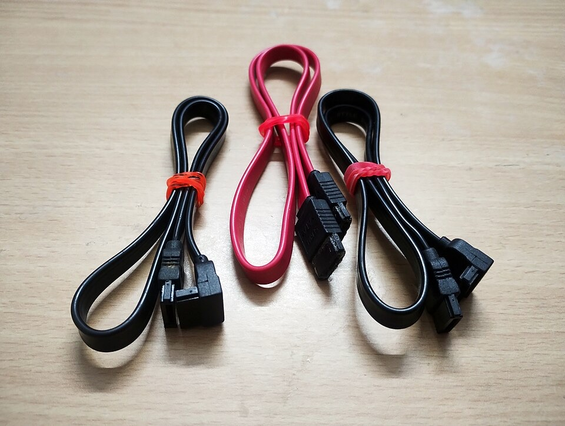
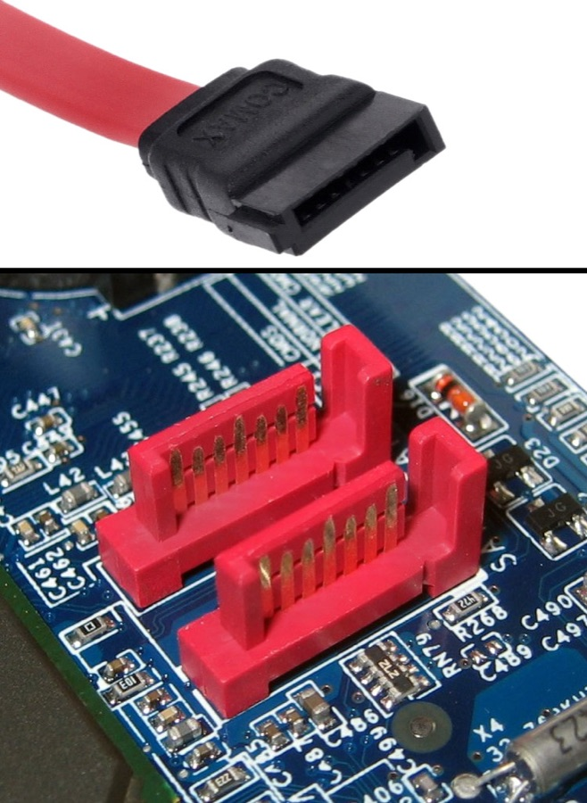
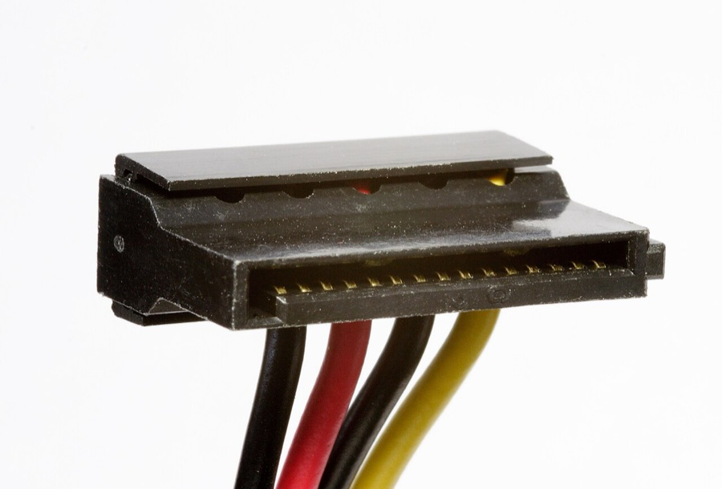
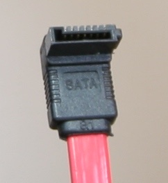
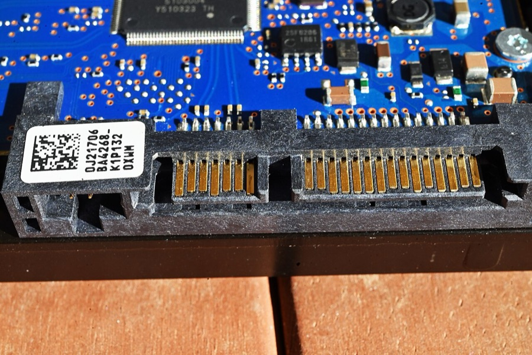
| Вариант | Характеристики | Приложение |
|---|---|---|
| Slimline SATA | стандартен 7-пинов конектор за данни + 6-пинов захранващ (само 5 V) | тънки оптични устройства (лаптопи) |
| Micro SATA | 7-пинов за данни + 9-пинов захранващ (3,3 V и 5 V), по-малка стъпка | 1,8" дискове |
| eSATA | отделен конектор без L-ключ, екраниран кабел до 2 m, по-високи сигнални нива, по-здрав (до 5000 включвания); не пренася захранване | външни дискове (≈ 2004–2012) |
| eSATAp (Power over eSATA) | комбиниран eSATA + USB порт, подава 5 V (и опционално 12 V) | лаптопи, външни кутии |
| xSATA / mini-SAS | многопортови кабели (4 SATA линии в един кабел), напр. SFF-8087 → 4×SATA | сървъри, RAID контролери |
SATA Express (SATA 3.2, 2013)
U.2 (SFF-8639)
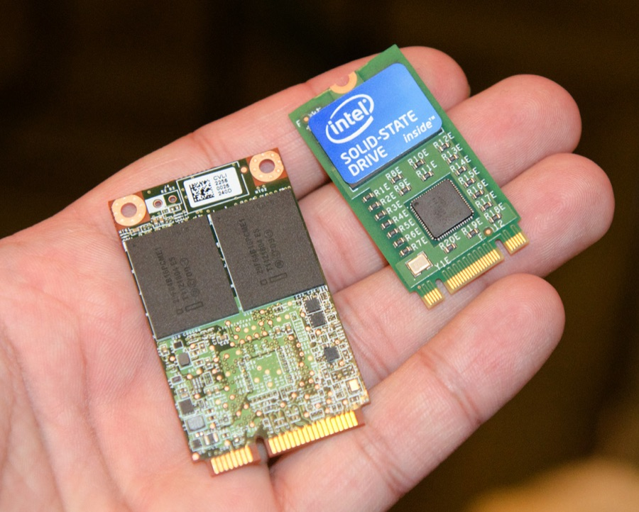
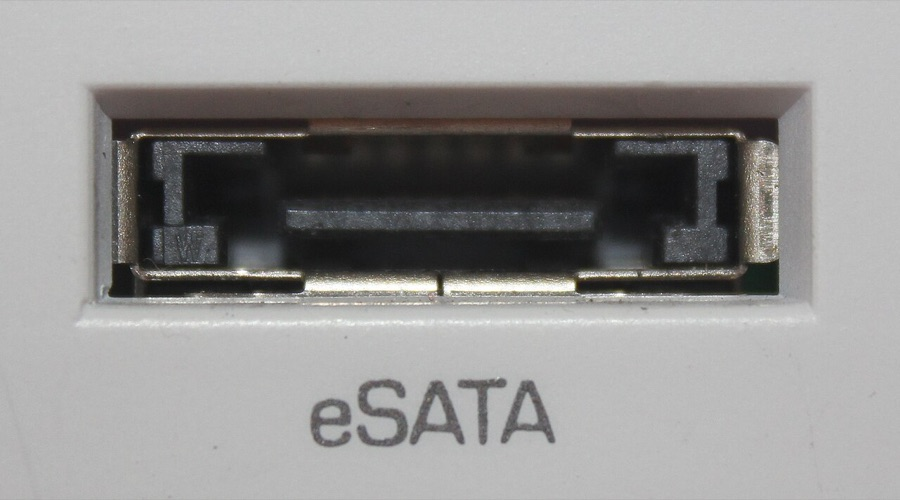
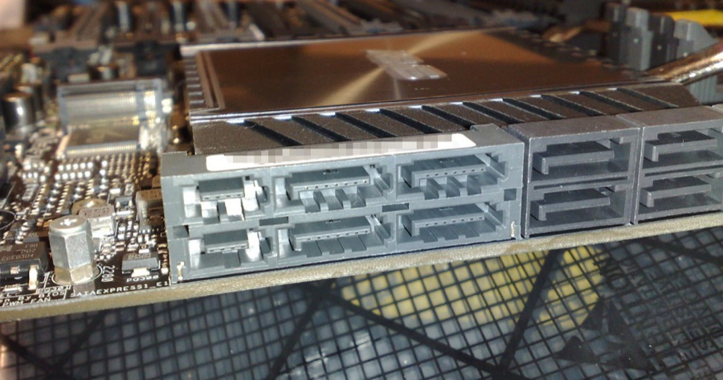
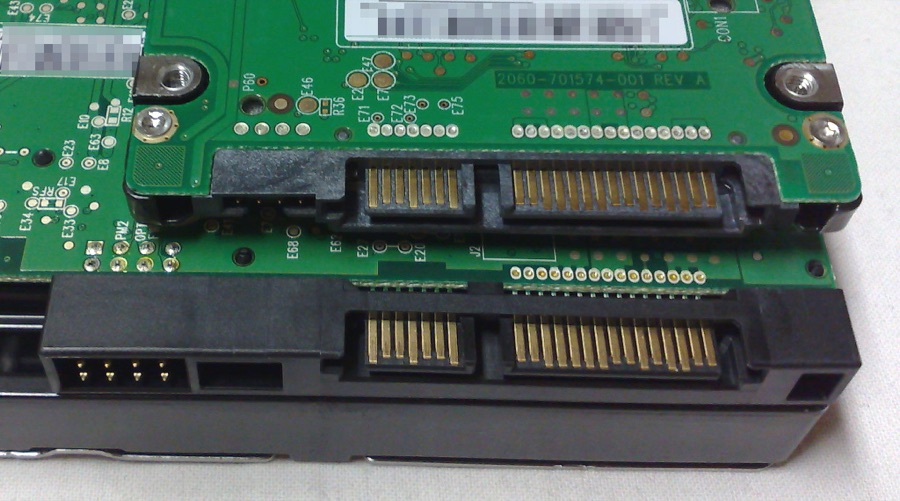
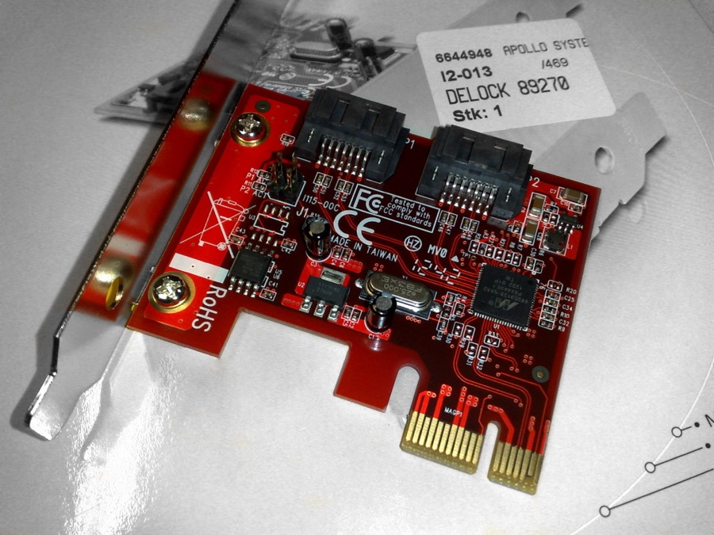
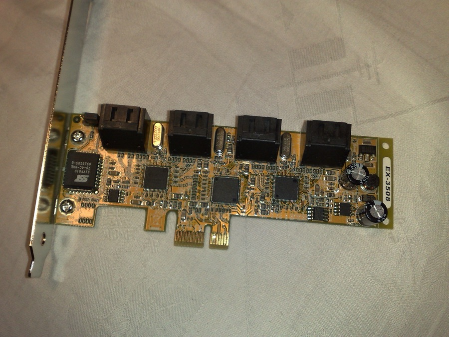
| Режим | Как работи | Последици |
|---|---|---|
| IDE / Legacy / Compatible | контролерът имитира стар PATA контролер (I/O портове 1F0h/170h, IRQ 14/15) | работи със стари ОС без драйвер; няма NCQ, hot-plug, ALPM |
| AHCI | стандартен интерфейс на Intel (2004) – регистри в паметта (MMIO), структури за команди в RAM | NCQ, hot-plug, енергоспестяване; стандартен драйвер във всички съвременни ОС |
| RAID (Intel RST и др.) | AHCI + фърмуер/драйвер за масиви | RAID 0/1/5/10 в BIOS/UEFI; нужен специфичен драйвер |
ahci в подсистемата libatastorahci.sys (Microsoft AHCI)Драйверът попълва Command Header + Command Table, после задава бит в PxCI → HBA изпраща FIS-а.
| Регистър | Предназначение |
|---|---|
| PxCLB | адрес на Command List |
| PxFB | адрес на Received FIS |
| PxIS / PxIE | статус / разрешение на прекъсвания |
| PxCMD | старт (ST), FIS приемане (FRE), спин-ъп, ALPM |
| PxTFD | Task File: STS (BSY, DRQ, ERR) и ERR |
| PxSIG | подпис на устройството (ATA, ATAPI, PM) |
| PxSSTS | SStatus – състояние на връзката |
| PxSCTL | SControl – ресет, ограничение на скоростта |
| PxSERR | SError – грешки на връзката |
| PxSACT | SActive – активни NCQ тагове |
| PxCI | Command Issue – подадени слотове |
SStatus (PxSSTS)
SControl (PxSCTL)
SError (PxSERR)
| Параметър | SATA | SAS |
|---|---|---|
| Команден набор | ATA | SCSI |
| Скорост | 6 Gbit/s | 12 / 22,5 Gbit/s (SAS-3/4) |
| Дуплекс | полудуплекс | пълен дуплекс |
| Портове на диска | 1 | 2 (dual-port, резервиране) |
| Кабел | до 1 m | до ~10 m |
| Топология | точка-точка (+ PM) | expander-и, хиляди устройства |
| Цена / надеждност | ниска / настолна | висока / корпоративна |
| Параметър | SATA + AHCI | NVMe (PCIe) |
|---|---|---|
| Макс. скорост | 600 MB/s | ≈ 3,9 GB/s (Gen3 x4) ≈ 7,9 GB/s (Gen4 x4) |
| Опашки | 1 опашка × 32 команди | до 65 535 опашки × 65 536 команди |
| Прекъсвания | едно (или малко) | MSI-X, по опашка/ядро |
| Латентност (протокол) | по-висока | по-ниска |
| Произволно 4K IOPS | ≈ до 100 хил. | стотици хил. – милиони |
| Цена / GB | ниска | сходна при масовите модели |
S.M.A.R.T. (Self-Monitoring, Analysis and Reporting Technology)
| ID | Атрибут |
|---|---|
| 5 | Reallocated Sectors Count |
| 9 | Power-On Hours |
| 187 | Reported Uncorrectable Errors |
| 194 | Temperature |
| 197 | Current Pending Sector Count |
| 199 | UDMA_CRC_Error_Count – грешки по кабела / конектора |
Растящ атрибут 199 обикновено означава лош кабел, не лош диск.
Инструменти (Linux)
smartctl -a /dev/sda – атрибути, логове, самотестове (smartmontools)smartctl -t long /dev/sda – дълъг самотестhdparm -I /dev/sda – IDENTIFY: функции, NCQ дълбочина, TRIMdmesg | grep ata → „SATA link up 6.0 Gbps“/sys/class/ata_link/*/sata_spd – договорена скоростWindows
Get-PhysicalDiskКъде се използва днес
Бъдеще
SATA превръща паралелния ATA в бърз сериен интерфейс точка-точка, запазвайки софтуерната съвместимост. Слоестият протокол (физически, канален, транспортен, команден), NCQ, hot-plug и енергоспестяването го правят стандарт за над 20 години. Днес SATA остава основен за HDD и евтини SSD, а високата производителност се поема от NVMe.
Използвана литература